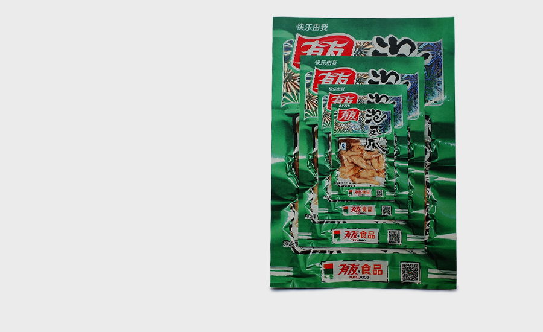
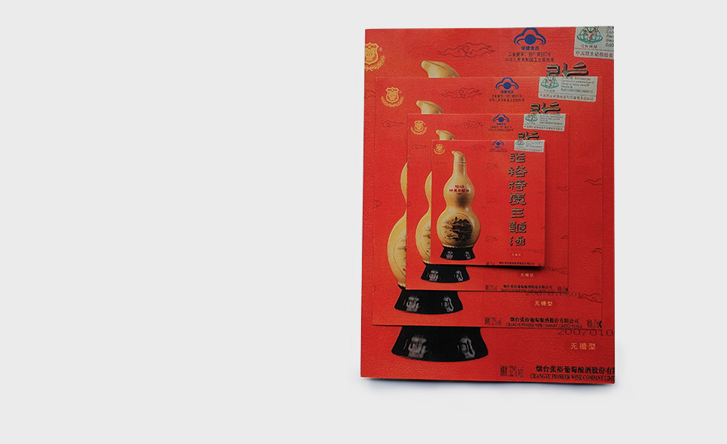
 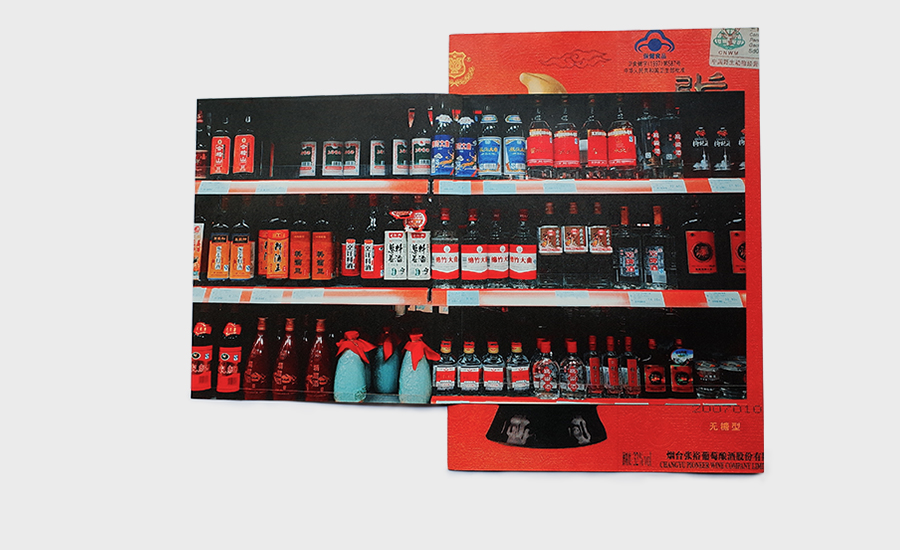
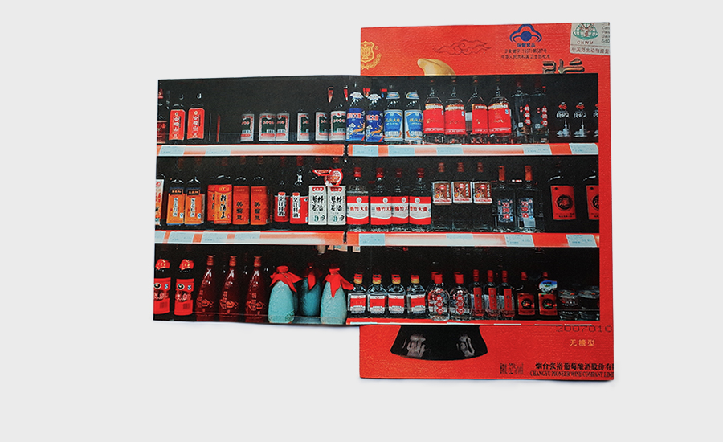


 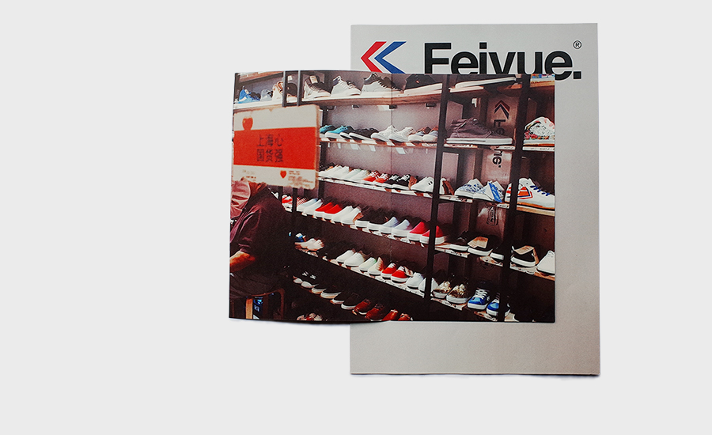
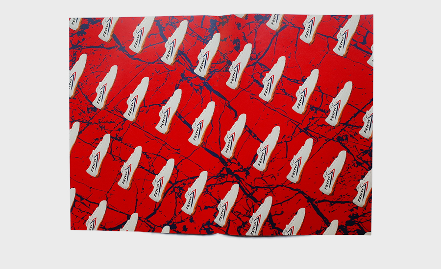
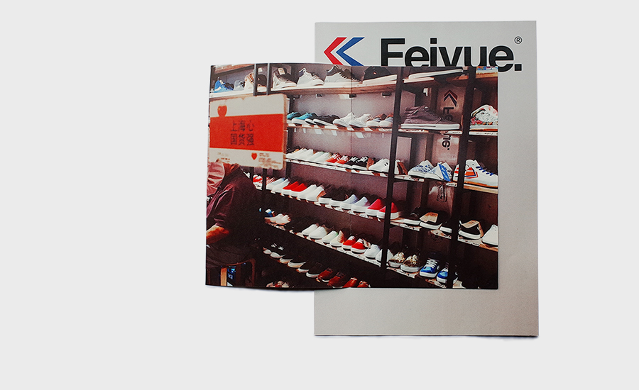
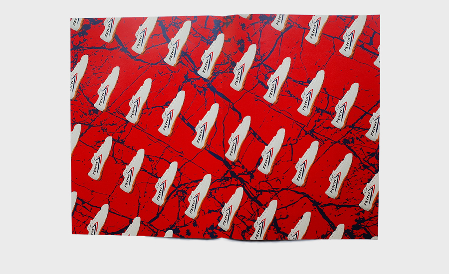

 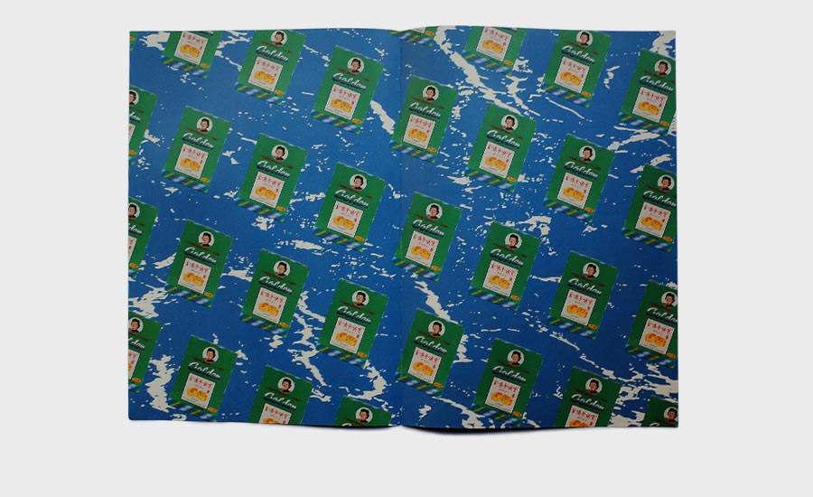
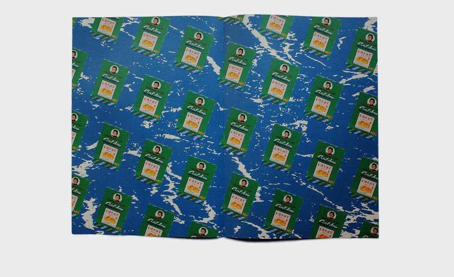
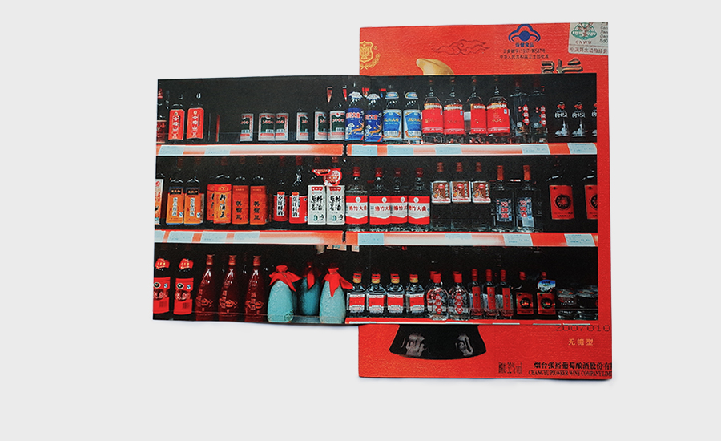
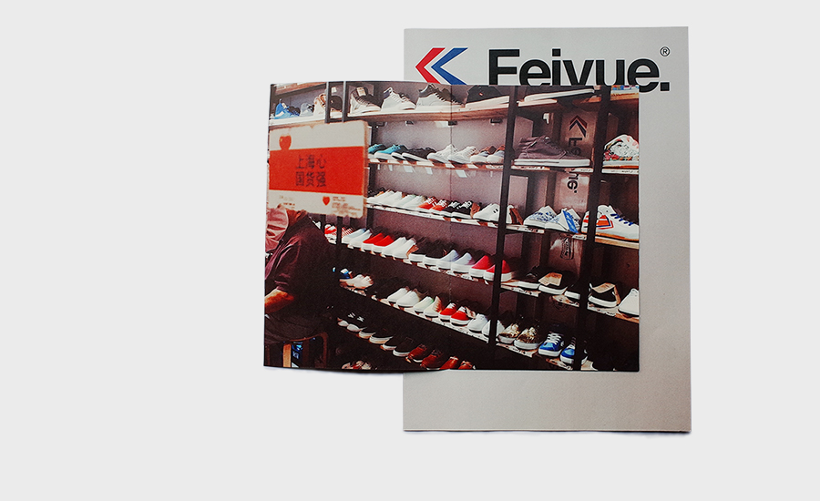
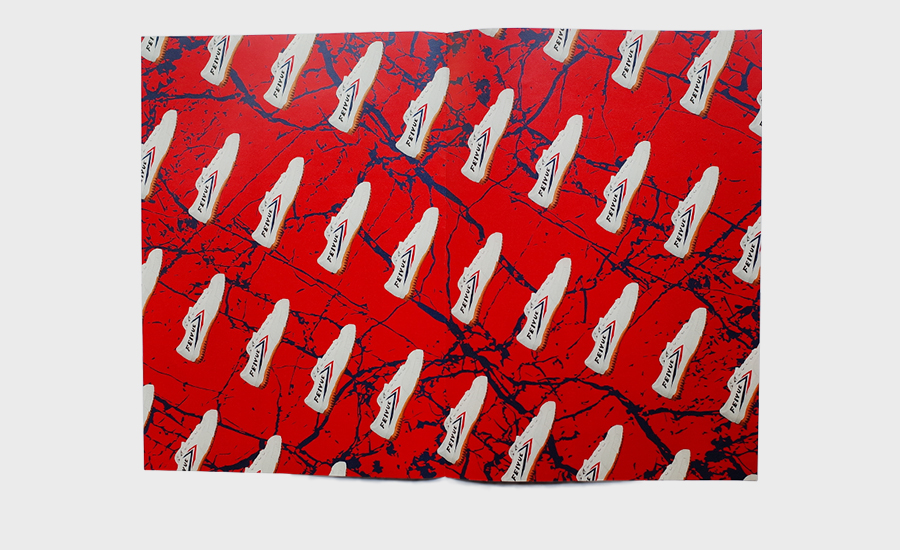
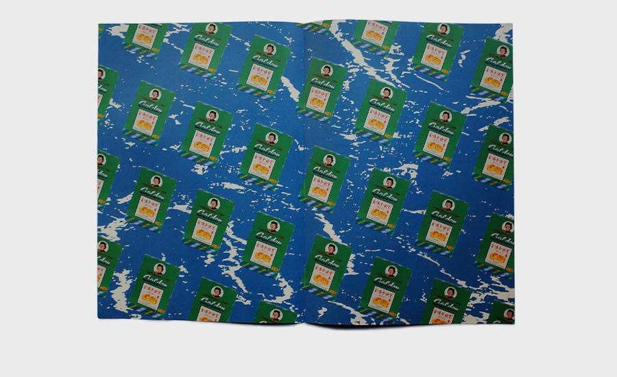
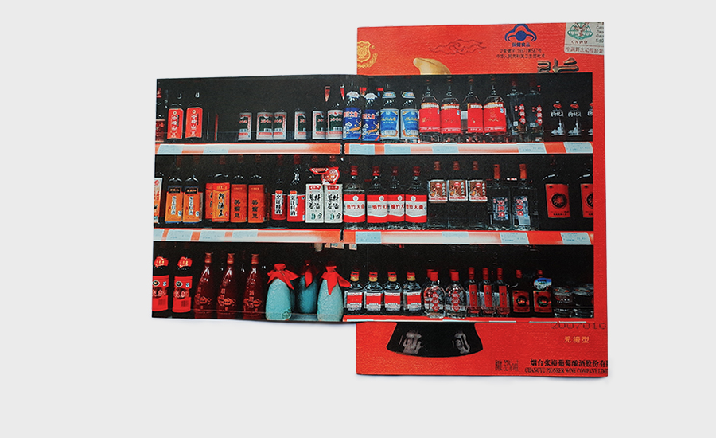
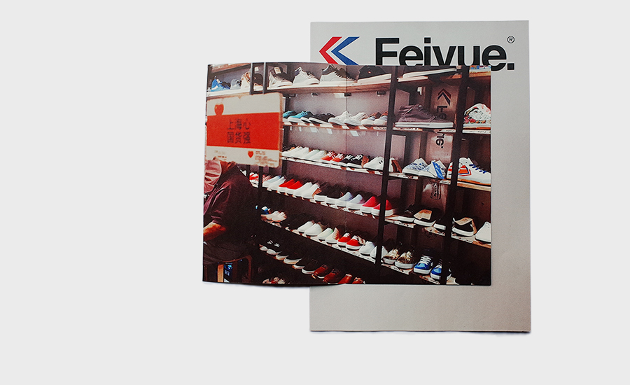
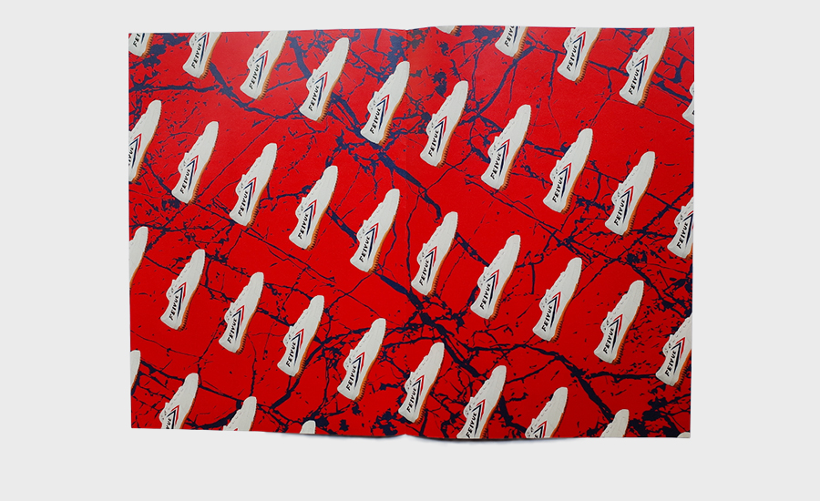
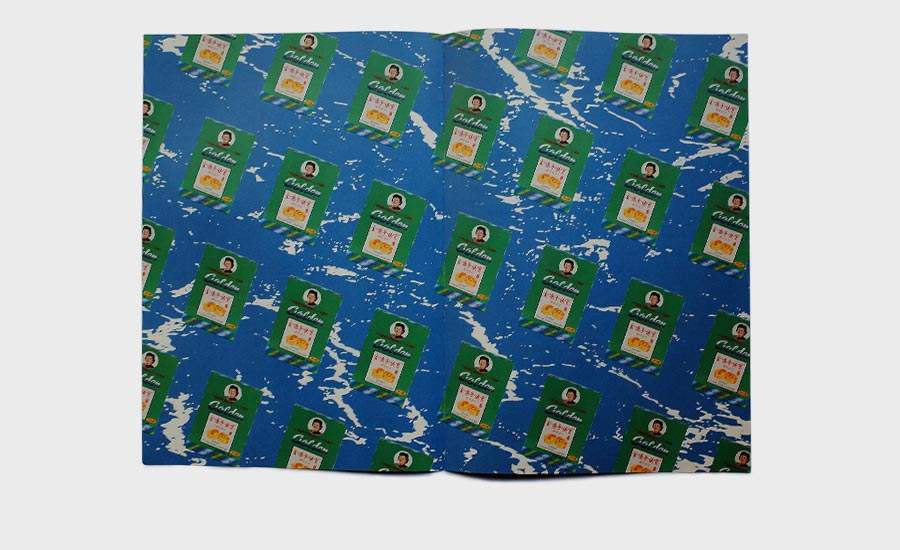
I got the brief from Iain Tait when I was working at the WK London Office. He asked if each Wieden office could curate one same size FedEx box with things to represent their city. We then shipped them around the world to exchange various cultures.
I curated the Shanghai one which included: chicken feet, sandalwood soap, Feiyue sneakers, a 80's wedding photo album inside a cigarette pack, dried fig snacks, hemorrhoid, golden throat lozenges and penis wine.
I also designed a collection of pictorials to introduce each object. The content included the products' basic intro, famous advertisement, local merchandise, and a spread page of wallpaper.
I worked with Scott & Ben to initiate the concept and prototype the first round of package at the London office. Three months later, they shipped me a box packed with wonderful things, touching on London's economic issues, politics, food, drugs, etc.